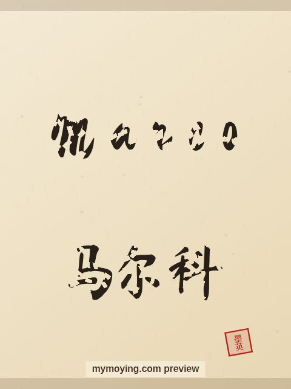

Marco in Chinese Calligraphy
Curious how Marco looks in Chinese brush calligraphy? This page shows the name, its Chinese transliteration 马尔科 (Mǎ ěr kē), and the story behind it.

Sample. “Marco” in the Regular (楷书) brush style with the Chinese name 马尔科 (Mǎ ěr kē). The paid file removes the watermark.
The Chinese characters for Marco
As a transliteration, Marco is usually written 马尔科 (Mǎ ěr kē). Each character is listed below with its own dictionary meaning — the name is chosen by sound, not by meaning, and Moying does not translate names. Please have a person review the characters before any permanent use such as a tattoo.
Origin and meaning
With Italian origins, Marco is usually read as “warlike (form of Mark)”.
About the name Marco
The Italian form of Mark, and the name of the explorer Marco Polo.
As a gift or a tattoo
People often order Marco as a framed gift or as a tattoo — the meaning, “warlike (form of Mark)”, is part of the appeal.
Open Marco in the generatorFree watermarked preview. $1.99 once for a clean high-resolution download of this name in every style and setting. No subscription. Digital product, delivered instantly; see Terms.